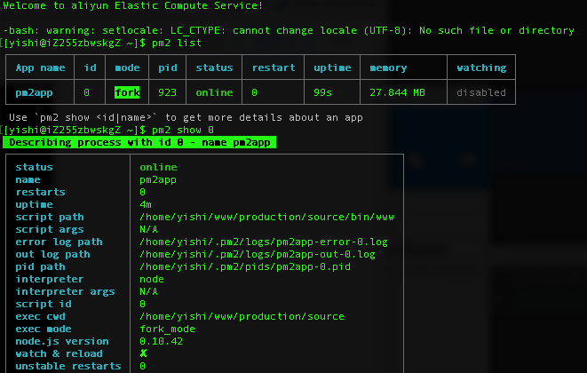

pm2管理Node.js项目
本文将介绍如何用 pm2 管理 Node.js 项目🔭。
平常运行 Node.js 项目是通过终端运行的，如果我们关闭终端时，服务也会停止，在服务器这样运行 Node.js 项目显然不合理。
如果这样运行的时候，服务端抛出一个错又如何处理？我们知道 Node.js 服务抛出意味着服务停止，用户没法访问你的网站。
这些问题我们借助 pm2 来解决 。
PM2
pm2 是 Node.js 的应用进程管理器。

pm2 有以下功能：
- 系统崩溃自动重启
- 启动多进程
- 自带日志功能
下载
在全局安装后，任何位置都可以用 pm2 命令。
1 | npm install pm2 -g |
基本使用
使用终端进入Node项目的根目录后，执行启动命令 ＋ 项目入口文件名可以启动项目。
1 | pm2 start app.js |
项目启动后
1 | // 查看列表 |
配置
- 新建配置文件
- 修改启动命令
- 检查文件内容
在项目目录下新建一个 pm2.conf.json 的文件。
1 | { |
完成后还需要配置一下 package.json文件中的配置
1 | "scripts": { |
多进程
操作系统会限制每个进程的大小，所以当我们的服务运行在一个进程是会出现这样的问题，虽然我们内存很大，但是分给一个进程的内存并不是全部内存，比如 Node.js 在32位系统中分配的内存为 1.6 G，没有充分利用内存。
所以我们在 pm2.conf.json 文件中可以设置进程数量来提高 cpu 利用率。